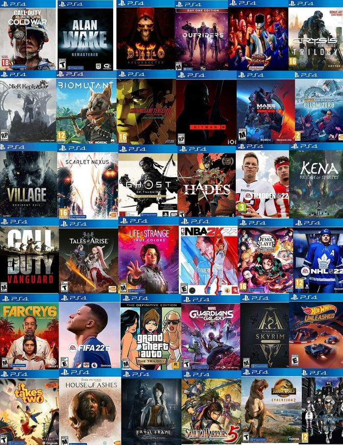
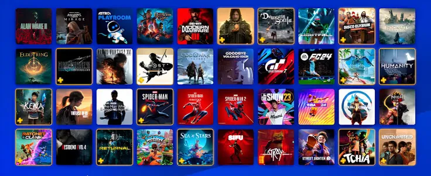

GAMING TIPS


Bermain game bersama teman atau mabar menjadi salah satu aktivitas yang menyenangkan bagi para penggemar permainan konsol. Ada berbagai jenis permainan yang dapat dinikmati bersama, mulai dari permainan olahraga, balapan, hingga pertarungan. Game olahraga dapat menjadi pilihan bagi penggemar sepak bola, sedangkan game balapan cocok bagi pemain yang menyukai tantangan kecepatan. Melalui pilihan permainan yang beragam, pengunjung dapat menikmati waktu bermain sekaligus mempererat interaksi bersama teman.